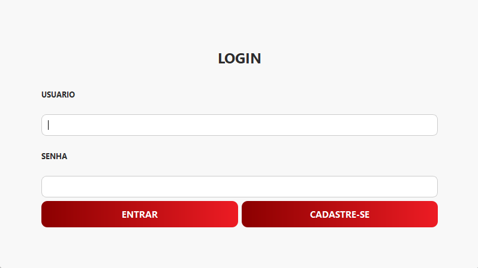
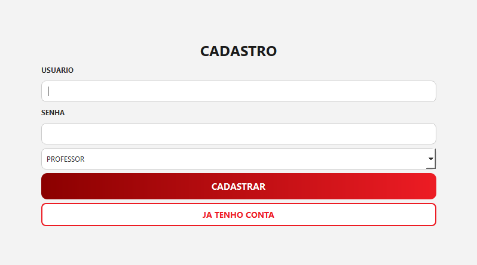
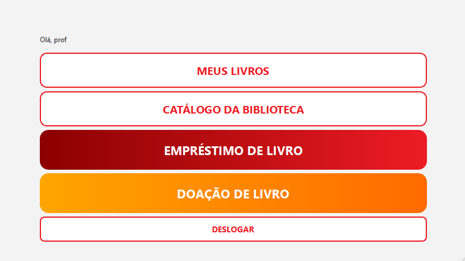
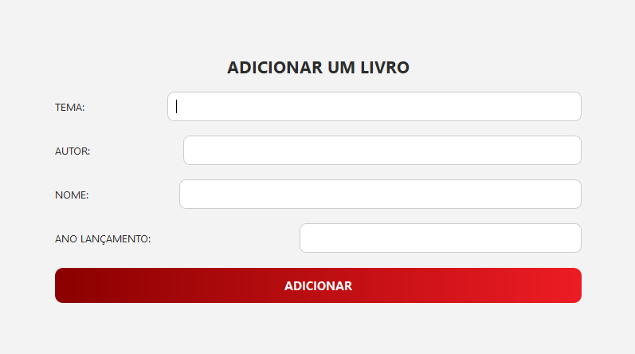
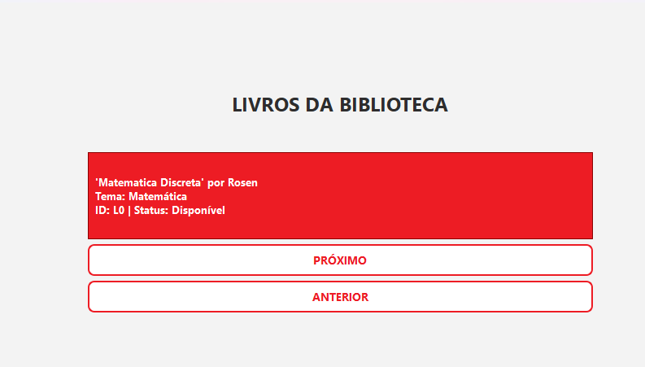

Sobre o Projeto
O Sistema de Biblioteca Virtual é um projeto acadêmico desenvolvido em C++ com o framework Qt. [cite_start]Ele simula as operações de uma biblioteca real, aplicando conceitos de Programação Orientada a Objetos para criar um sistema modular e eficiente. [cite: 133, 136] [cite_start]O sistema gerencia um acervo de livros, diferentes tipos de usuários (alunos e professores) e suas interações, como empréstimos e devoluções. [cite: 136, 145, 173]
Principais Funcionalidades
-
[cite_start]
- Cadastro de Usuários: Permite a criação de usuários do tipo Aluno e Professor, cada um com diferentes permissões e limites. [cite: 136, 175, 199] [cite_start]
- Gestão do Acervo: Funcionalidades para adicionar (doar) e remover livros do acervo da biblioteca. [cite: 146, 147] [cite_start]
- Sistema de Empréstimo e Devolução: Usuários podem pegar livros emprestados e devolvê-los. [cite: 136, 186, 187]
- Fila de Espera com Prioridade: Quando um livro está indisponível, os usuários podem entrar em uma fila. [cite_start]Professores têm prioridade sobre os alunos para receber o livro. [cite: 136, 169] [cite_start]
- Interface Gráfica: Interface de usuário intuitiva desenvolvida com o Qt Creator para facilitar a interação com o sistema. [cite: 204]
Demonstração Visual
Abaixo, algumas telas que demonstram a interface e a experiência do usuário:
Tela de Login
Tela de Cadastro
Menu Principal
Doação de Livros
Catálogo de Livros
Diagrama de Classes
A arquitetura orientada a objetos do projeto, com foco em herança, polimorfismo e encapsulamento, é representada pelo seguinte diagrama:

Acesso ao Projeto
Explore os recursos do projeto através dos links abaixo:
Código no GitHub Relatório Final Vídeo no YouTube